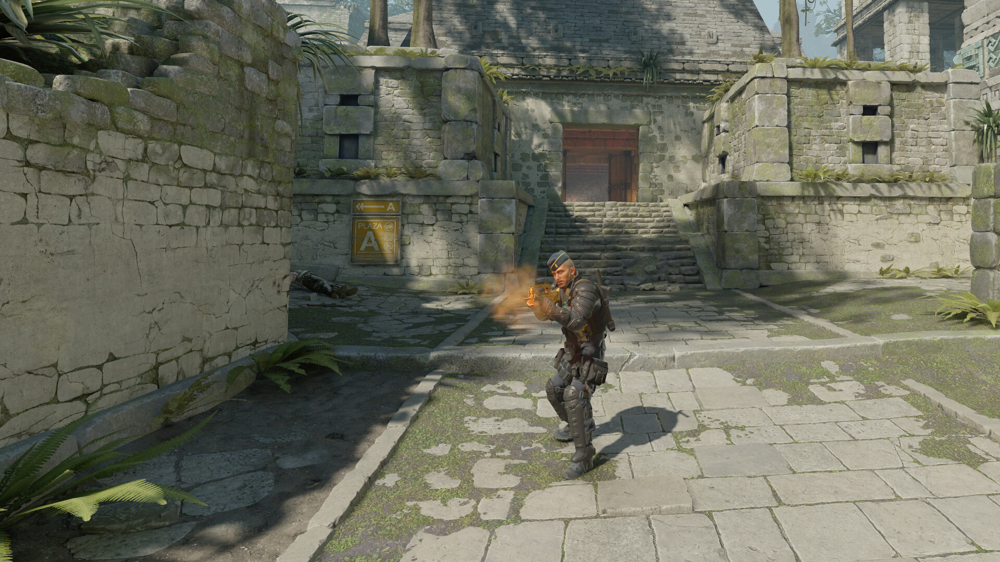

Momente importante
Counter-Strike a început ca un mod pentru Half-Life și a devenit una dintre cele mai cunoscute serii de jocuri.
- 1999 - apare Counter-Strike, ca mod pentru Half-Life.
- 2004 - apare Counter-Strike: Source.
- 2012 - apare Counter-Strike: Global Offensive.
- 2023 - apare Counter-Strike 2.

Comparația versiunilor
| Versiune | An | Motor grafic |
|---|---|---|
| Counter-Strike 1.6 | 2000 | GoldSrc |
| Counter-Strike: Source | 2004 | Source |
| Counter-Strike: GO | 2012 | Source |
| Counter-Strike 2 | 2023 | Source 2 |